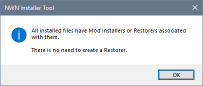
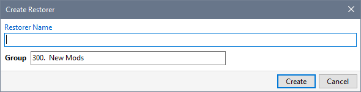
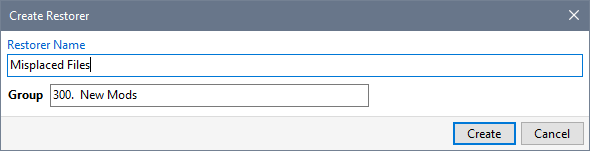
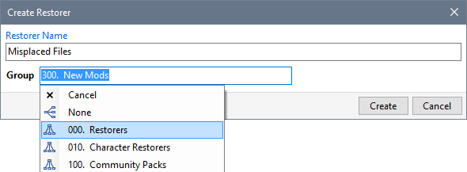
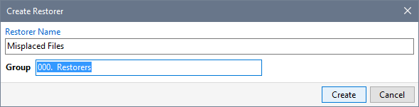
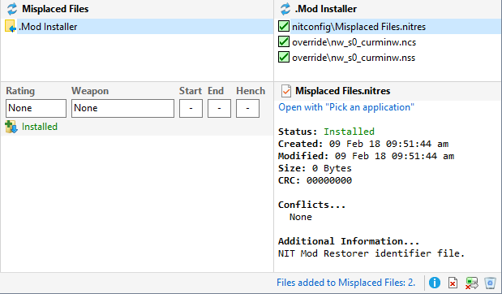

Use Create Restorer from the Manage menu to see if there are any unowned files in your Profile.

The Installer Tool displays this message when all your files have been defined by existing Mods and Restorers.

The Tool displays this dialogue if there are files that have not been defined by your existing Mods and Restorers.





Create Restorers